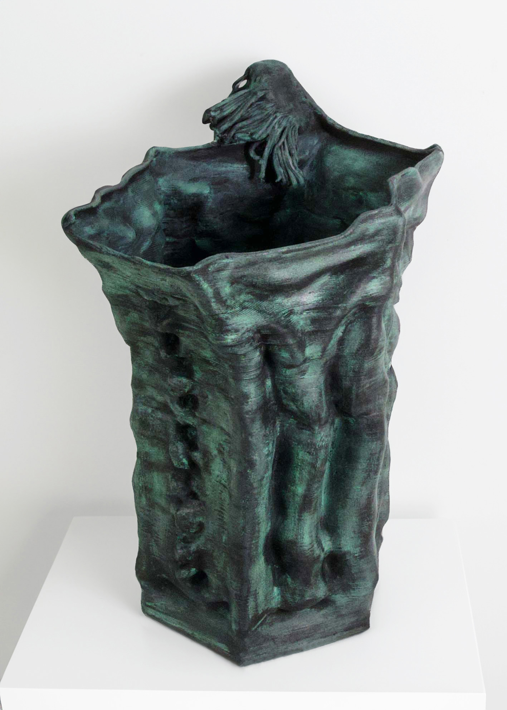
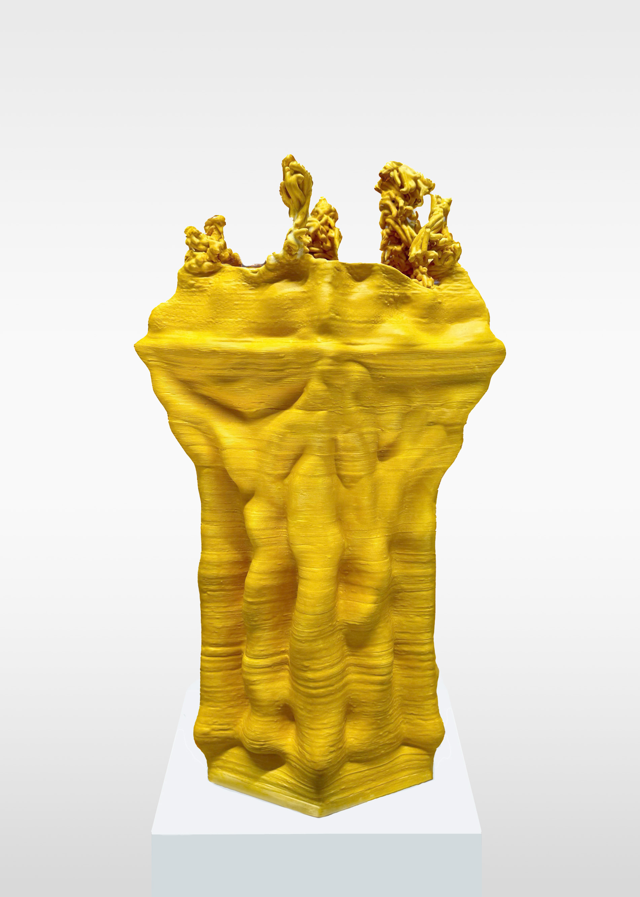
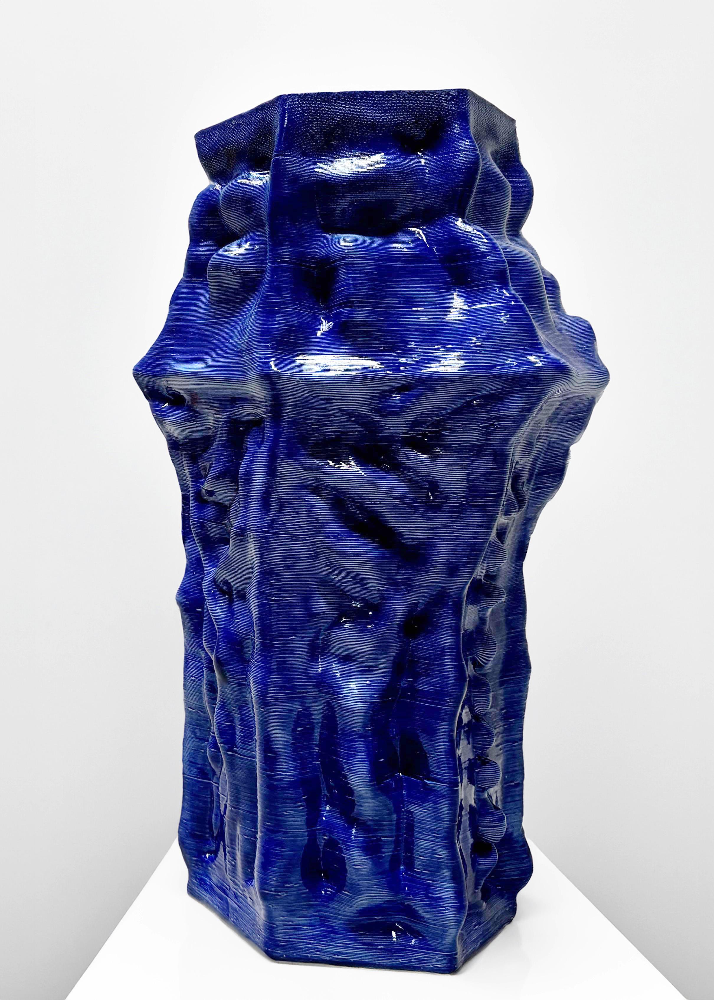

Selected Works
Triton
2024
Recycled bronze by lost-wax casting
21 x 21 x 23 cm
Edition of 3 + 2 AP
Acanthus Ascendant
2024
Recycled anticorodal aluminium
60 x 17 x 13 cm
Unique

Scottish Fantasy
2024
Computer-aided coil-built ceramic, glaze, wax
43 x 30 x 24 cm
Unique

Euryale
2024
Computer-aided coil-built ceramic, glaze
44 x 25 x 20 cm
Unique

Tours Détourés
2024
Computer-aided coil-built ceramic, ink
48 x 25 x 20 cm
Unique

Tours et Détours
2024
Computer-aided coil-built ceramic, glaze
53 x 30 x 24 cm
Unique
Patinated Perspectives
2024
Recycled steel, patina, bamboo charcoal
75 x 45 x 45 cm
Unique
Spinal Bloom
2024
Earthenware, glaze
Variable dimensions, height 10 - 60 cm
Unique
Fragile Beauty
2024
Bioplastic made from a culture of bacteria and yeast
23 x 12 x 16 cm
Unique